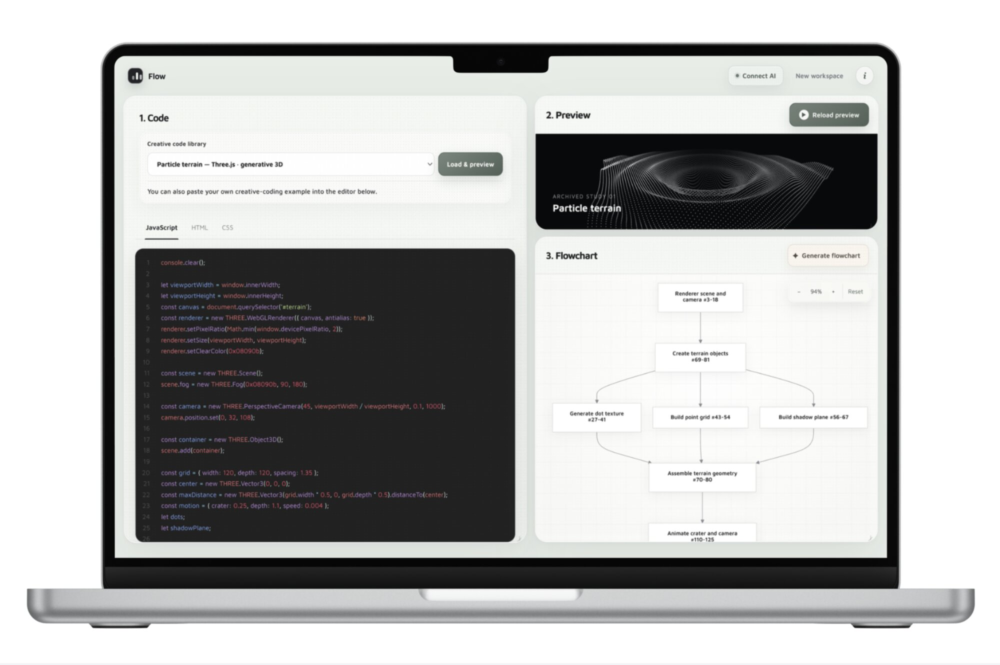
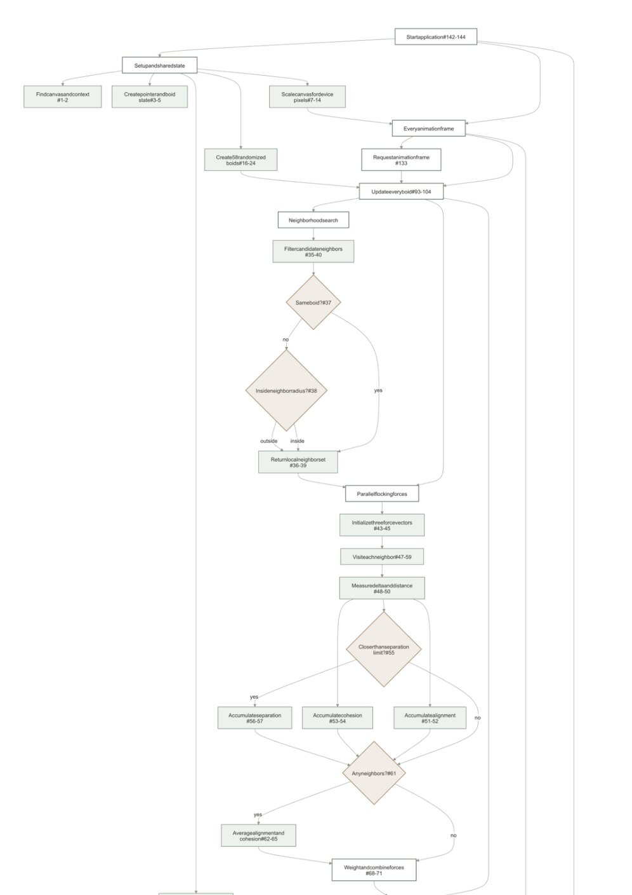
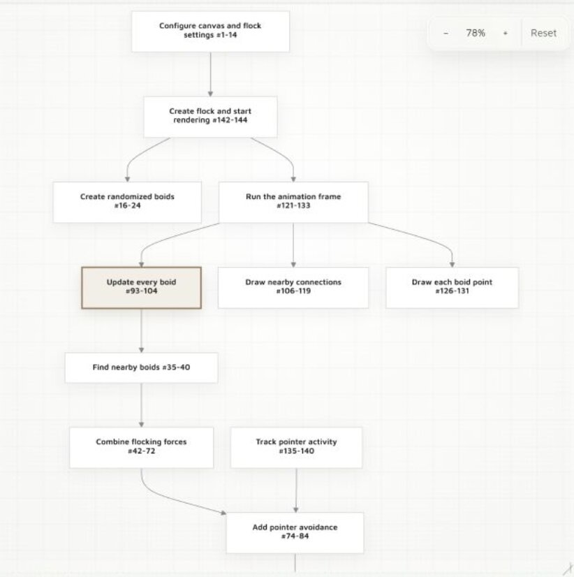
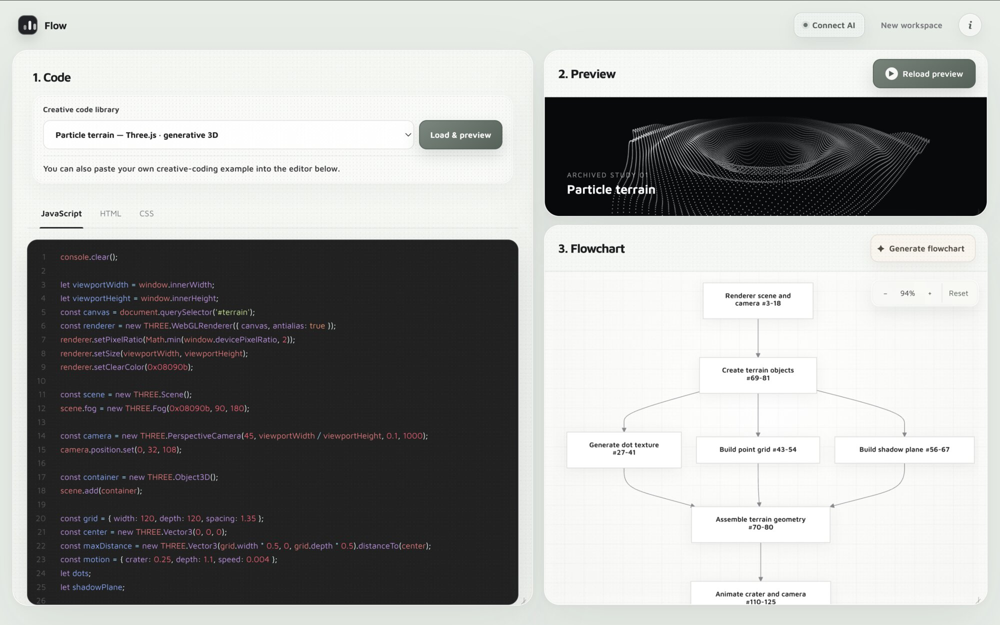

SketchTrace
Overview
SketchTrace turns creative code into an interactive map using LLM, helping beginners see how the code is structured, what each part does, and how it shapes the final visual.
My Role
I designed and built it 0→1, from research and interaction design to the full-stack React implementation, LLM pipeline, testing, and deployment.
- Research
- Literature review · precedent research · interaction concepts
- Design
- Figma · interaction design · UI/UX · prototyping
- Engineering
- React · CodeMirror · LLM integration · responsive implementation
- Delivery
- Testing · deployment · GitHub · CI/CD
Project Context
Creative coding is becoming easier to generate, but not necessarily easier to understand.
For beginners learning tools like Three.js and WebGL, even a relatively small project can contain unfamiliar functions, parameters, and relationships.
AI-assisted coding can produce a working project in seconds. It can also leave learners with code that works before they understand why.
At Columbia’s Design Tool Lab, I asked: How might we use AI not just to generate creative code, but to help beginners understand its structure?
Literature review and precedent research pointed to flowcharts as a way to make program structure visible without hiding the underlying code.
Final Artifact
Code
A CodeMirror editor keeps the source available and highlights relevant ranges as learners navigate.
Live Preview
The rendered output ties abstract program logic to the visual behavior it produces.
Interactive Flowchart
An LLM maps essential systems into nodes that link directly back to the code.
Key Design Moments
Choosing examples that actually stress-tested the system
Problem Simple UI examples did not show why structural visualization mattered.
Decision Build four visually and structurally different creative-coding studies.
Result The examples became both learning content and product stress tests.
Shrinking complexity without hiding the code
My first flowcharts represented nearly every meaningful function and relationship. They were comprehensive—and overwhelming for a beginner.
I iterated on the prompt strategy and information hierarchy until each view focused on roughly 11–13 essential nodes.


Comprehensive CuratedThe flowchart stopped trying to reproduce the entire program. It became an entry point: enough structure to orient a learner, with the source always available for depth.
The question shifted from “How do I visualize all of this code?”
to “What does a beginner need to see first?”
Making three representations feel like one interface

Constraint Equal space crowded the screen; separate screens weakened the relationships.
Decision Place code and flowchart side by side—the strongest direct relationship—and keep the live preview continuously visible.
Interaction Selecting a node points to its exact code while resizing changes emphasis without breaking context.
The goal wasn’t simply to fit three panels onto one screen. It was to make moving between them feel like one continuous act of understanding the program.
Impact
I built SketchTrace as a working, responsive web prototype rather than stopping at a design concept.
Iteration reduced dense generated flowcharts to a navigable set of essential nodes while preserving direct links to the underlying code.
Rather than only producing the answer, AI can help expose the structure behind that answer.
Reflection
Helping beginners isn’t about showing everything. It’s about curating complexity and tying structure to something tangible.
For SketchTrace, that meant giving learners several ways to understand the same program: its structure, the code behind it, and the visual result it creates.
I can see this interaction model extending beyond creative coding—without turning it into a separate product.
What interests me most is not using AI to remove difficult material, but using it to give people better ways into it.